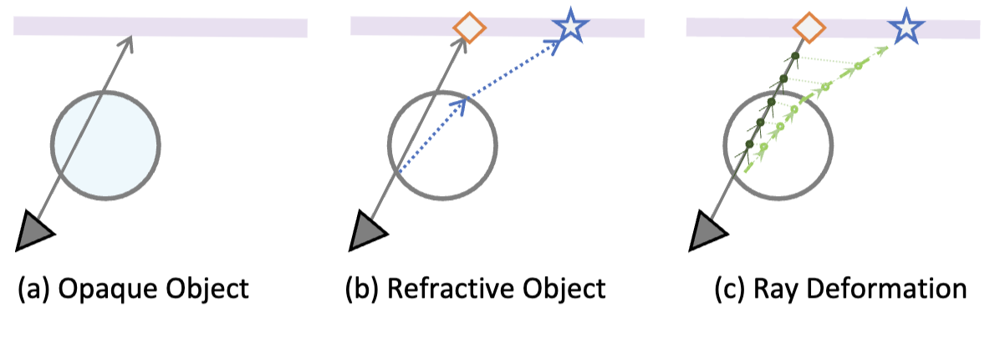

|
Chunyi Sun I am currently embarking on my journey as a first-year PhD student in Computer Science at the Australian National University (ANU), under the primary supervision of Prof. Stephen Gould. Prior to this, I completed my undergraduate studies at ANU, earning a Bachelor of Advanced Computing (Honours). |
{kind=link}
News
|
ResearchI am deeply committed to exploring the captivating field of 3D generation and reconstruction, aiming to develop innovative approaches and techniques. In addition, I have a strong interest in Large Language Models, Embodied AI, and Multi-Modal Perception. |

|
3D-GPT: Procedural 3D Modeling with Large Language Models
Chunyi Sun*,Junlin Han*, Weijian Deng, Xinlong Wang, Zishan Qin, Stephen Gould PreprintCode / Project Page/ Paper |
|
NeRFEditor: Differentiable Style Decomposition for Full 3D Scene Editing
Chunyi Sun,Yanbin Liu, Junlin Han, Stephen Gould WACV 2024Paper |
|
|  |
Ray Deformation Networks for Novel View Synthesis of Refractive Objects
Weijian Deng, Dylan Campbell, Chunyi Sun, Shubham Kanitkar, Matthew Shaffer, Stephen Gould. WACV 2024Paper |
|
Harmonizer: Learning to perform white-box image and video harmonization
Zhanghan Ke, Chunyi Sun, Lei Zhu, Ke Xu, Rynson WH Lau ECCV2022Code / Video/ Paper |
|

|
Blind image decomposition
Junlin Han, Weihao Li, Pengfei Fang, Chunyi Sun , Jie Hong, Mohammad Ali Armin, Lars Petersson, Hongdong Li ECCV2022Code / Project Page/ Paper |
Services
|
Awards
|